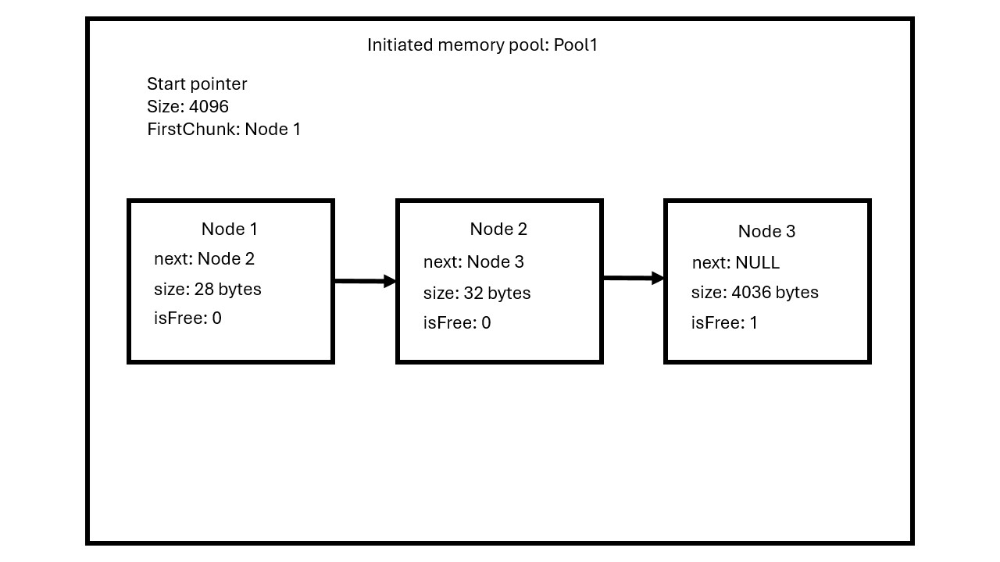

Project overview
This project is part of my journey to learn C as a Computer Science student, focusing on enhancing my understanding of addresses and pointers in the C language.
Understanding Memory Allocation
To allocate memory, we first need to assess how much is available. We can request a specific amount of memory from the system using the mmap function. Memory requests are typically made in pages, which are fixed-length contiguous blocks of virtual memory. Common page sizes are 4096 bytes.
The mmap function returns a pointer to the first allocated memory address, with the last address located just after the number of bytes requested. This gives us a block of memory we can use as needed.
Building the allocator
My goal with this memory allocator is to reduce fragmentation - organizing memory to minimize wasted space and improve efficiency. To achieve this, I will implement a free list. A free list is a data structure that keeps track of free (unallocated) chunks of memory in a “pool”, allowing for efficient allocation and deallocation of memory.
I will use structures as nodes that will be connected with each other. And every node will represent a chunk. Each node will have meta data about itself such as, the size of the node, if the node is free and a pointer to the next node. The pool itself will be a structure too, it will store data about the size of the pool, a pointer to the first node and a pointer to the start of the pool. All this meta data is essential to keep track of the memory and optimize the use of it.
Here is a visualization of the list:
The interfaces
In my memory allocator I'll have two functions:
- The first mem_alloc that is going to take one argument which is the size of memory that the user want to allocate.
- The second is the mem_free which will take one argument, a pointer, and free the memory that its points.
How mem_alloc works?
The mem_alloc function begins by checking for an existing pool of memory. If no pool is found, it will create one. The function then loops through the pool, starting with the first node, to search for an available node that can accommodate the requested memory.
Each node contains a “header” that represents the size of its metadata. The size of this header depends on the number of variables in the structure.
For instance, if a user requests 4 bytes of memory and the header size is 24 bytes, the function will allocate a total of 28 bytes from the pool. This means it will either take a free node with a 24-byte header and at least 4 bytes available after the header or allocate a new block as needed.
Creating a new node
The last node in the pool will have its “next” pointer set to NULL, and its size will represent the remaining available space in the pool. When the function reaches the last node and finds it free, it will create a new node by allocating memory from the last node. The pointer of the new node will then be linked to the last node.
How mem_free works?
The mem_free function first updates the state of the specified node to mark it as free, allowing the memory to be reused. It then checks the next node and loops through the remaining nodes to find the node preceding the requested node. During this process, it checks whether both the previous and next nodes are free. If they are, it merges them into a single node, effectively increasing the available space.
Error handling
When working with memory, effective error handling is essential. Proper memory allocation is critical to prevent memory leaks and ensure program stability. Since the C language lacks built-in error handling mechanisms for memory management, I implemented checks for specific conditions during memory allocation and deallocation. If any of these conditions are not met, the program will exit to avoid significant errors. Additionally, I printed out the exit condition, so it will be easyer for the user to troubleshoot.
Conclusion
In conclusion, this project has significantly enhanced my understanding of memory management and pointer usage in C. By implementing a custom memory allocator, I gained practical experience in working with dynamic memory allocation, fragmentation reduction, and data structures like free lists. The ability to effectively allocate and deallocate memory is crucial for developing efficient software, and this project has provided me with valuable insights into the underlying mechanics of memory management. During the project, I encountered challenges with efficient memory allocation. One key challenge was ensuring that I made the most of the requested memory "pool." This involved optimizing the allocation and deallocation processes to minimize fragmentation and maximize available memory. As I continue my studies in computer science, the skills and knowledge acquired from this project will serve as a strong foundation for tackling more complex programming challenges in the future.